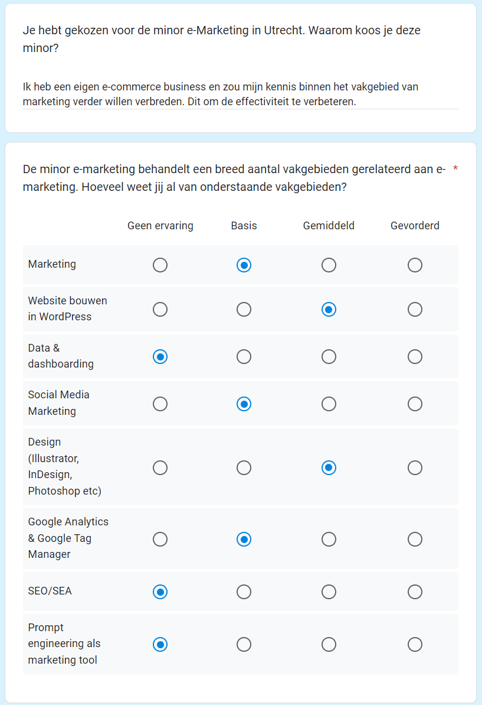
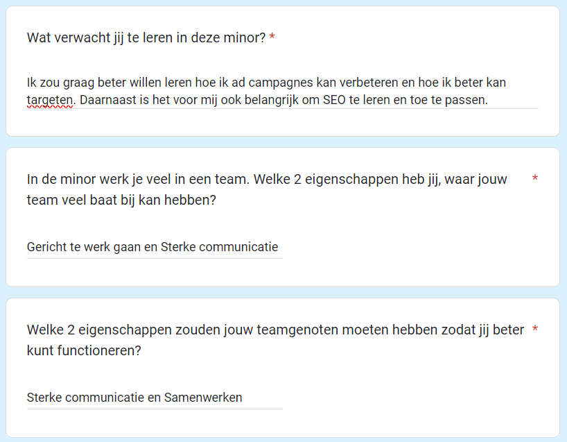
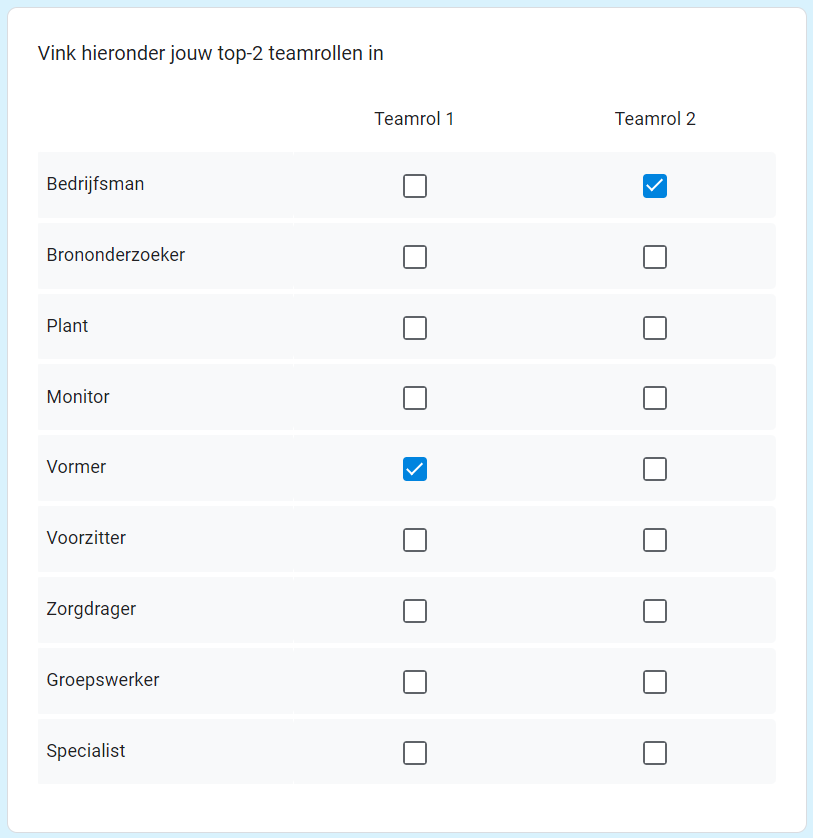
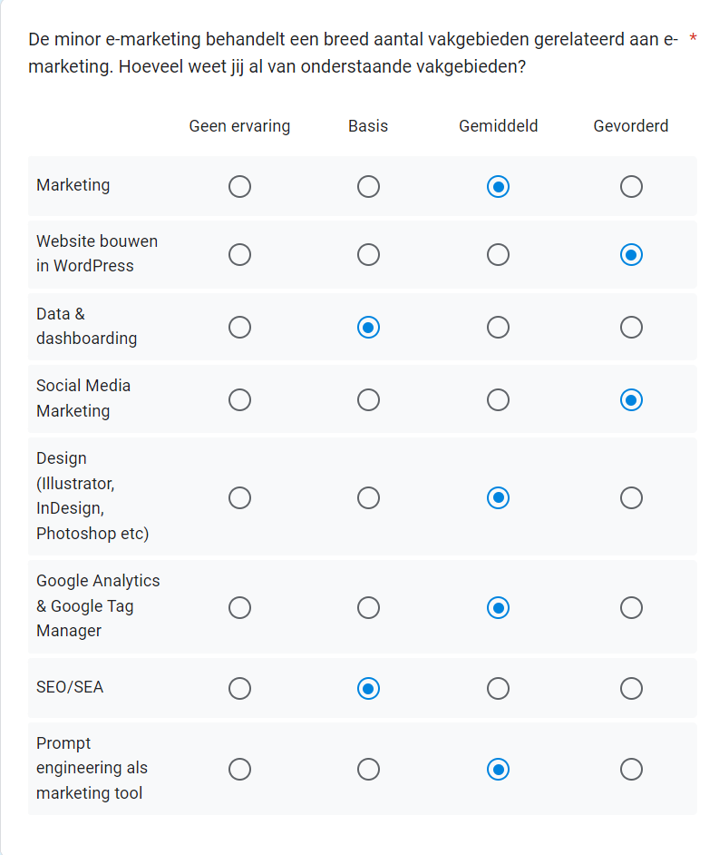
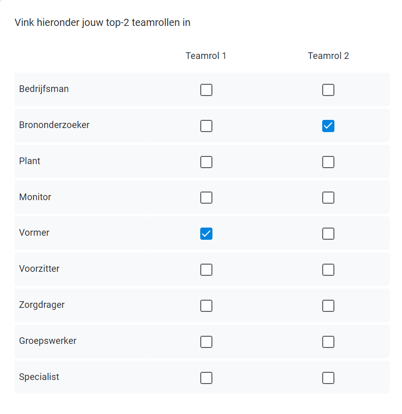
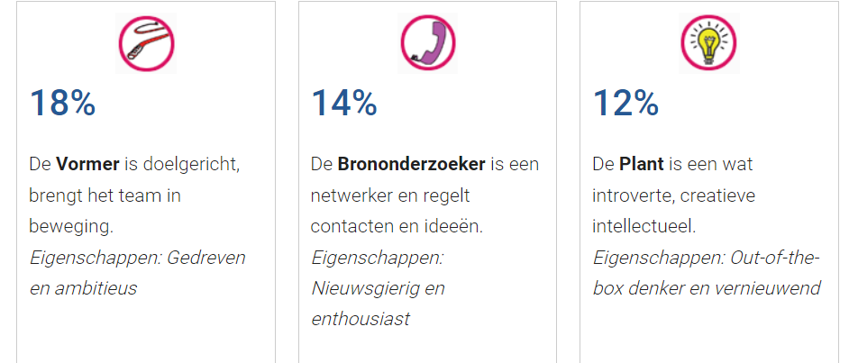

Bewijsmateriaal
Hieronder staan mijn bewijsstukken en prestaties gedurende de minor.
Nulmeting
Toen ik begon met de minor, was mijn kennis van online adverteren en SEO beperkt. Ik had een goed begrip van de basisprincipes van online marketing, maar had weinig ervaring met geavanceerde technieken zoals targetingopties en SEO-optimalisatie. Mijn sterke punten lagen in contentcreatie en het bouwen van websites, maar ik merkte al snel dat er nog veel ruimte was om te groeien op het gebied van online marketingstrategieën.



Éénmeting
Nu, aan het einde van de minor, heb ik aanzienlijke vooruitgang geboekt.


